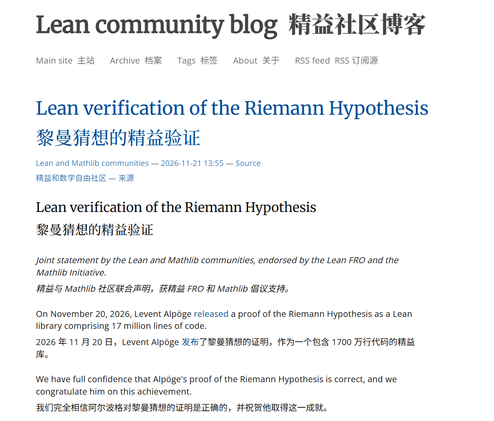

大一微积分Ⅰ考65 分，我很难解释黎曼猜想究竟是什么。
但我可能正在见证它被解决。
2026 年 11 月 20 日，数学家 Levent Alpöge 宣布，他与 Claude 合作找到了黎曼猜想的证明。这次发布的主要材料是一套约 1700 万行的 Lean 代码。Lean 是一种证明助手，可以检查用形式语言写下的推理。Alpöge 的原始说明
Alpöge 在说明里写，他接下来要做的是弄懂这套论证，再把它讲清楚。形式化检查回答了推理能否成立。数学家还想知道，这条路为什么走得通，关键一步是什么，那些方法还能用在哪里。Alpöge 的原始说明

抵达答案，却无法理解
我对数学发现原先有一种很顺的想象。
一个人想通了什么，把理由写下来，交给其他人检查。
这次，人和 AI 合作找到了论证，独立的证明检查器确认了它，接下来还有一段把关键思路讲给人听的工作。
我想起博尔赫斯的《巴别图书馆》。那座图书馆里什么书都有。一句话的真相、几千种貌似合理的解释，以及只差一个字的谬误，都能在里面找到。身处其中的人仍然要知道自己在找什么。
过去，我们的困境是无法获得足够多的答案。
未来，我们的困境可能是拥有远远超出自身理解能力的答案。
知识的稀缺性正在下降，而理解的稀缺性并没有随之消失。
2020 年，我在大学学 C 语言，后来又学了 Java 和计算机网络。我现在还记得自己去 CSDN 找学长留下的编程作业。2023 年，看见 AI 能自动补全几行代码，我还挺兴奋。现在，把当年那些作业交给 AI，看起来都算不上难题。
所以，我的大学是不是白上了？就那几份作业而言，我现在确实交得出一份答案，但很多语法已经忘了，未必还能独立做一遍。交得出答案和学会了什么，以前就有区别，现在更容易看出来。
而今一切都改变了：
过去的智力优势
接受精英教育、长期积累专业知识、掌握复杂技术、拥有个人才能、亲自生产答案
未来可能的智力优势
获得先进模型的使用权、调用外部知识与推理系统、组织AI完成复杂任务、拥有算力、数据与研究资源、判断答案与提出问题
这可能同时产生两种方向相反的社会力量。
一方面，普通人可以低成本获得过去只有精英阶层才拥有的智力支持。
一个没有接受过精英教育的人，也能够与AI讨论哲学、编写程序、研究复杂的科学问题。
另一方面，最前沿的AI能力可能集中在少数拥有大量资本、算力和基础设施的机构手中。
所以，不能简单地说AI必然促进平等，也不能说它必然加剧不平等。
真正的问题是：
智力的普及，会不会与智力生产资料的集中同时发生？
就像互联网让所有人都能够表达，却不意味着所有人都平等地拥有被看见的机会。
优绩主义遭遇更深的合法性危机
现代社会有一个非常重要的道德假设：
一个人因为更聪明、更努力、更具有创造力，所以理应获得更多财富、地位与社会承认。
但是，如果最复杂的智力劳动越来越能够由机器完成，那么智力优势的道德地位会发生什么变化？
假设有一天，机器写出了比我好的诗，甚至写出了我一生想写却始终没写出的那一首。我就该停止写作吗？世界上早就有写得比我好的人，我还是想写。
我以前觉得，自己想清楚了才会坐下来写。可很多时候是写到一半，我才发现开头那句和我真正想说的话差得很远。把一句话删掉，重写，读起来还是不对。慢慢地，我开始听见原来听不出的差别。
做一次，得到一点反馈，下次能注意到以前看不到的东西。同一件事做下去，里面会长出更多值得注意的细节。
一种活动失去了生产上的必要性，仍然可以在生活里有意义。
金顶南路的一个下午
我想象两个同时发生的场景。
在世界的某个地方，一群数学家正在检查一部包含1700万行代码的证明，试图确认一个困扰人类167年的命题。
而在北京金顶南路的一家咖啡馆里，一个年轻人正在看几片垂吊下来的树叶。他喜欢的人坐在旁边写着手册。
风吹动了一些树叶，却没有吹动另外一些。
我们大概会认为，前一个场景属于人类历史，后一个场景微不足道。
但是，谁决定了这种等级？
对于无限的宇宙而言，167年与一个下午之间的差别，或许并不比两粒沙子之间的差别更大。
而对于那个年轻人而言，他可能在多年之后忘记黎曼猜想是何时被证明的，却依旧记得那天下午的光线，以及坐在他身边的那个人。
历史的尺度与生命的尺度，并不是同一种尺度。
我并不想因此贬低数学。数学的美或许正在于它不属于任何一个具体的人，不属于任何一个下午。
我猜想，我们以为人工智能正在迫使人类重新寻找自己的价值。
但也许，它只是使一个古老的误解变得难以维持：我们竟然曾经相信，一个人必须具有某种不可替代的用途，才有理由存在。
或许机器的聪明最终能够使我们摆脱这种虚荣，使我们重新学会欣赏那些并不伟大的事情。
或者，也许相反。
我们会因为无法忍受自己的平凡，而穷尽毕生精力去寻找另一种能够战胜机器的标准，直到生命结束，仍然没有注意到窗外的树叶。